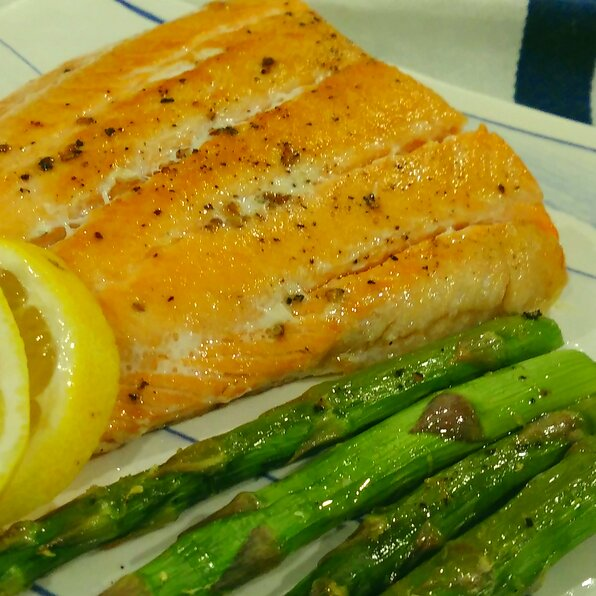

Sous Vide Salmon

Description
Wonderfully moist and flavorful. We like our salmon on the firmer side, but this can easily be adjusted. Just lower the cooking temperature if you prefer it yours medium.
Ingredients
- 1 salmon fillet
- 1 shallot, finely chopped
- 1 pinch salt and pepper
- 1 teaspon olive oil
Steps
- Fill a large pot with warm water. Attach a sous vide precision cooker to the pot and set temperature to 125 degrees F (51°C).
- Place shallot into a plastic bag and lay the salmon on top, skin-side down. Use a vacuum sealer to remove the air and seal the bag or use the water-immersion method. Once water temperature has reached 125 degrees F (51°C), add the bag to the pot and set timer for 45 minutes.
- Remove bag from the pot when the timer goes off and pat dry. Remove and discard the shallot.
- Heat olive oil in a nonstick or cast-iron skillet over medium heat until it shimmers. Add salmon, skin-side down, and sear for 1 1/2 minutes. Flip and sear for an additional 1 1/2 minutes.